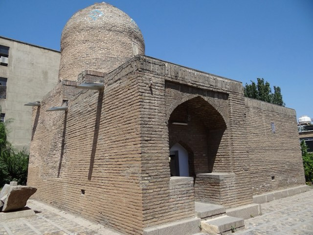
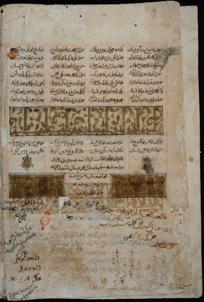

Photo : Salle de lecture, bibliothèque Sainte-Geneviève, Paris · Marie-Lan Nguyen · CC BY 2.0 FR, recadrée, via Wikimedia Commons
Katayoun Matloubi

Enseignante d’histoireWashtenaw Community College
Chercheuse associée, Inclusive History ProjectUniversité du Michigan–Dearborn
Chercheuse associéeHadassah-Brandeis Institute, université Brandeis
کتایون مطلوبی
Je suis enseignante d’histoire au Washtenaw Community College et chercheuse associée à l’Inclusive History Project de l’université du Michigan–Dearborn, ainsi qu’au Hadassah-Brandeis Institute de l’université Brandeis. J’ai obtenu en 2025 un doctorat en littérature française contemporaine et études francophones à l’université du Connecticut, accompagné d’un certificat d’études supérieures en droits humains.
Mes recherches portent sur les formes indirectes de représentation de la Shoah. Elles explorent la place du silence et de l’absence dans la littérature et le cinéma, l’histoire des Juifs d’Iran et des réfugiés qui ont transité par ce pays, ainsi que les transformations du témoignage au passage d’une langue à l’autre. Mon livre, The Rhetoric of Obliquity: Anna Langfus, Holocaust Cinema, and the Ethics of Indirection, voit en Anna Langfus, rescapée juive polonaise et lauréate du prix Goncourt, à la fois l’inventrice d’une écriture oblique et sa première critique, puis suit au cinéma les questions qu’elle a posées, de Resnais et Lanzmann à Pawlikowski, Nemes et Glazer.
Je m’appuie sur des sources en français et en persan, sur la traduction, sur les méthodes de l’histoire orale et sur la médiation muséale pour interroger le témoignage et l’appartenance juive. Mon article « The Persistence of the Void: Formal Absence in Holocaust Representation from Langfus to Ida » a paru en 2026 dans Holocaust Studies, et mes recherches ont bénéficié du soutien de l’United States Holocaust Memorial Museum, de la USC Shoah Foundation, du Hadassah-Brandeis Institute et du Trans-Atlantic Summer Institute de l’université du Minnesota. Je travaille en azéri, en persan, en français, en anglais et en turc ottoman, et je lis l’arabe.
Trois questions, une méthode

Représentation et mémoire de la Shoah
Silence, absence et détour dans la littérature de langue française et le cinéma de la Shoah, d’Anna Langfus à La Zone d’intérêt.
Lire la suite
Histoire des Juifs d’Iran
Les Juifs d’Iran et les réfugiés qui ont transité par ce pays, et un étudiant juif iranien classé par l’administration de Vichy, 1941–1944.
Lire la suite
Témoignage et traduction en plusieurs langues
Comment le témoignage se transforme entre le persan, le français et l’anglais, et ce que la traduction, humaine ou automatique, peut aplanir ou perdre.
Lire la suiteImages via Wikimedia Commons : Mur des Noms, Mémorial de la Shoah (Ninaraas, CC BY 4.0) · Mausolée d’Esther et Mardochée, Hamadan (Adam Jones, CC BY-SA 2.0) · Shahnameh de Florence, 1217 (domaine public). Recadrées.
Holocaust Studies
The Persistence of the Void: Formal Absence in Holocaust Representation from Langfus to Ida
L’article récuse l’idée que l’absence formelle serait éthique par nature dans la représentation de la Shoah. Il lit Langfus, Shoah, Le Fils de Saul et Ida de manière asymétrique, comme une généalogie de la médiation.
Version révisée de « Knowing Non-Knowledge » soumise à Memory Studies.
« The Persistence of the Void » publié en ligne dans Holocaust Studies, en libre accès.
J’enseigne le cours HST 109, The Early Modern World, au Washtenaw Community College.
Gelman International Research Workshop à l’United States Holocaust Memorial Museum, et recherches en salle de lecture du Shapell Center.
United States Holocaust Memorial MuseumHadassah-Brandeis InstituteUSC Shoah FoundationTrans-Atlantic Summer Institute, université du MinnesotaDodd Center for Human Rights